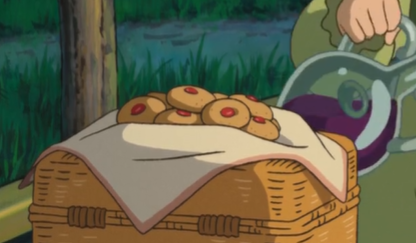

A picnic by the sea wouldn’t be complete without these jammy delights!✨🛶
These thumbprint cookies have a soft, chewy texture, a crunchy sugar or coconut coating, and sweet jam-filled centers. Pack them with some grape juice and enjoy a late-night picnic while rowing across the lagoon. Yield: 30 cookies Prep time: 20 minutes + 30 to 45 minutes chill Cook time: 15 minutes
Ingredients
Cookie Dough:
⅔ cup salted butter, softened
½ cup granulated brown sugar
1 large egg
1 tsp vanilla extract
1¾ cups cake flour
½ tsp salt
1 tsp baking powder
Strawberry Variation:
½ cup granulated white sugar
½ cup strawberry jam
Apricot Variation:
½ cup unsweetened shredded coconut
½ cup apricot jam

🍓 Sweet center, cozy crunch — perfect for a hidden picnic.
Instructions
Using a stand mixer or a handheld mixer on medium to high speed, cream the butter and sugar in a large bowl until the mixture becomes pale and fluffy, 3 to 5 minutes.
Add the egg and vanilla extract to the butter mixture and beat until combined.
In a separate medium bowl, combine the flour, salt, and baking powder.
Add your dry ingredients to your wet ingredients and beat on medium to high speed until the dough is well mixed and smooth. If the dough is too sticky, add 1 tablespoon of flour at a time. If the dough is too dry, add 1 tablespoon of water at a time. Continue to add more or less flour or water until you have reached the desired consistency. The dough should be malleable and easy to roll into mini balls.
Divide the dough into 30 equal pieces and roll each piece into 1-inch balls.
For the strawberry variation, roll the balls in a small bowl of granulated sugar and set them aside.
For the apricot variation, roll the balls in a small bowl of finely shredded unsweetened coconut and set them aside.
Using your thumb or a measuring teaspoon, make a small indention in the center of the raw cookie dough. Repeat for the remaining dough balls.
Place the 2 variations of cookie dough on 2 baking trays lined with a silicone mat or parchment paper. Ensure each cookie is spaced 1 ½ inches apart. Place the 2 baking trays in the refrigerator and let the dough chill for 30 to 45 minutes. This will ensure that the cookies hold their shape and won’t spread out too much during the baking process. After the cookie dough has chilled, preheat the oven to 375°F.
Spoon 1 teaspoon of strawberry jam into the indentation in each cookie coated in granulated sugar. Spoon 1 teaspoon of apricot jam into the indentation of each cookie coated in coconut.
Bake for 15 minutes, until the edges of the cookies turn golden brown. To ensure even baking (cookies are golden on all edges), rotate the baking tray at the 10-minute mark and continue baking. Remove from the oven and cool on the baking tray for 10 minutes, then carefully transfer the cookies to a wire rack to cool completely.